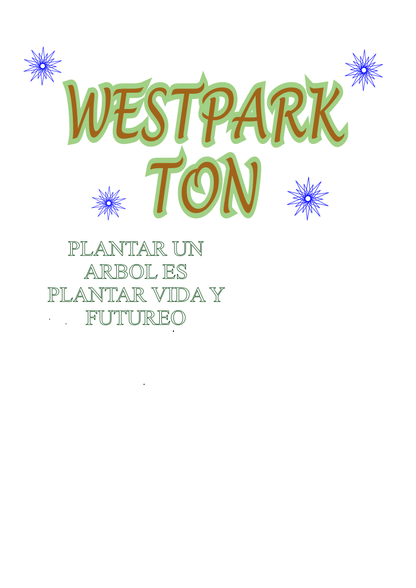

Pagina de reforestación
en este trabajo de colegio de bachilleres es un trabajo que hablara sobre las partes donde nunca se han plantado arboles y actualmente se plantaran .
Responsable:
Este proyecto y las actividades que se realicen van a ser bajo la responsabilidad de su servidor: Artemio nicolas puerta
Objetivo
para repoblar áreas que han sido deforestadas, con el objetivo de restaurar ecosistemas y mejorar la calidad del suelo, el aire y el agua..